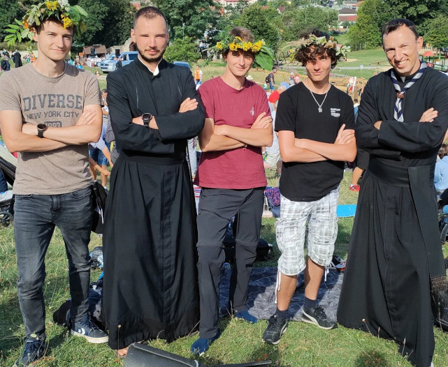
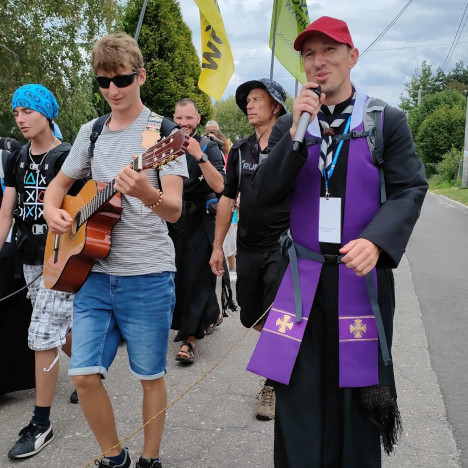

Rozwój Duchowy
Przejdę 5 dniową pielgrzymkę (150km) z Krakowa na Jasną Górę. Przed pielgrzymką przeczytam książkę: "Droga do..." Piotr Koper
Zadanie to sprawiło mi masę przyjemności i uważam, że spełniło swoją rolę. Na pielgrzymkę poszedłem w grupie Pijarskiej z moim stałym spowiednikiem oraz kierownikiem Duchowym równocześnie. Była to pierwsza pielgrzymka w moim życiu, wcześniej słyszałem jedynie od taty, że w okresie szkoły średniej i studiów regularnie chodził na Jasną Górę. Postanowiłem sobie kiedyś, że w końcu pójdę, więc jako zadanie to była świetna okazja ku temu.Oprócz pogłębienia wiary oraz zwiększenia świadomości, którym bardzo sprzyjały codzienne konferencje, Msze Święte, Modlitwa oraz indywidualne rozmowy z osobami Duchowymi, był to również czas przełamania wielu barier: masa nowych znajomych (poznałem m.in. ówczesnego, Diakona, który został w Maju Kapłanem, na którego Święceniach i Prymicji miałem przyjemność służyć), grałem na gitarze dla Naszej grupy, a co najbardziej szokujące dla mnie z perspektywny czasu to fakt, że zdecydowałem się zaśpiewać do mikrofonu jedną Dziesiątkę Różańca (dla pewności dodam, żeby nie było nieporozumień, że śpiew to absolutnie nie moja działka i wstydzę się śpiewać publicznie). Uważam, że pielgrzymka bardzo mnie rozwinęła duchowo, warto dodać również, że nie zakończyłem na tym rozwoju w tej dziedzinie i od lutego należę do Duszpasterstwa Akademickiego. Jeśli chodzi o drugą część zadania to niestety okazało się, że książka "Droga do" nie jest nigdzie w sprzedaży, przynajmniej mnie się nie udało jej nigdzie znaleźć, pytałem również znajomych Duchownych ale niestety bezskutecznie.
Praca nad charakterem
Przez okres czterech miesięcy, od poniedziałku do piątku będę się trzymał zaplanowanego z góry planu poranka. Rutynę będę planował przed każdym rozpoczynającym się miesiącem, a w czasie realizacji notował wnioski. W zadaniu pomoże mi przeczytanie książki: "7 nawyków Skutecznego działania" Stephen Covey
Bardzo rozwojowe zadanie, ale nie udało mi się zrobić 4 miesięcy pod rząd, gdyż w połowie był sierpień, a w nim miałem masę zróżnicowanych planów i po prostu nie byłbym w stanie ustalić jednego trybu poranka i się go trzymać. Dlatego stwierdziliśmy z opiekunem, że dobrym pomysłem będzie podzielić te miesiące, gdyż zacząłem to zadanie robić już w czerwcu. Sama książka była bardzo ciekawa i szybciutko udało mi się ją przeczytać, jest w niej masa przykładów ćwiczeń albo refleksji, które można zrobić w domu, więc zdecydowałem, że gdy zostanę drużynowym to część z tych zadań przeprowadzę z ZZ'tem. Zadanie uważam za zrealizowane i bardzo rozwojowe. Chociaż nie została mi żadna rutyna na dłużej to nauczyłem się wcześniej wstawać (co było w moim przypadku dużym problemem, zwłaszcza po zdalnych), skuteczniej uczyć i lepiej organizować czas.
| Miesiąc | Plan | Sukces | Odczucia |
|---|---|---|---|
| Czerwiec | Msza Święta w Mojej Parafii w Tenczynku | TAK | Muszę się przyznać, że HR nie był napędem do porannych Mszy, gdyż od połowy kwietnia chodziłem na 7:00 służyć w mojej Parafii (miałem taki plan lekcji, który mi na to pozwalał). Był to jeden z lepszych okresów w moim życiu, dzięki takiemu rozpoczęciu dnia wstawałem pełen energii i motywacji do działania. Odbiło się to bardzo pozytywnie na moich ocenach oraz wyniku egzaminu zeszłorocznego. |
| Lipiec | Przed pobudką drużyny bieg/skakanka a później chwila pływania | TAK | Podczas lipca byłem na obozie, więc mogłem sobie pozwolić na poranne pływanie. Był to również okres, w którym byłem mocno zmotywowany aby skakać na skakance. W treści piszę o bieganiu lub skakaniu na skakance, w rzeczywistości biegać byłem tylko raz, gdy ktoś mi gwizdnął skakankę i nie mogłem jej znaleźć. Pływanie polegało bardziej na przemyciu się, bo podczas skakania na skakance się pociłem (co nie znaczy, że nie pływałem realnie, chodzi o to, że przy okazji pływania, myłem się z potu). Potem przychodziłem do mojej drużyny na powitanie dnia i to było bardzo satysfakcjonujące widząc zaspane miny, a samemu będąc w pełni obudzony. |
| Wrzesień | Trening z aplikacją | TAK | Niestety nie miałem bardziej ambitnego pomysłu na wrzesień, więc ograniczyłem się do aplikacji "Ćwiczenia w Domu - Bez Sprzętu". Taki trening trwał koło 20 minut, więc poźniej miałem jeszcze chwilę czasu aby zjeść spokojnie śniadanie albo się pouczyć. |
| Październik | 10 minut modlitwy, 15 minut ćwiczeń, prysznic, 20 minut czytania/nauki | TAK | Wrzesień zmotywował mnie aby rozbudować trochę poranną rutynę. Zaraz po wstaniu odmawiałem Jutrznię ze swoimi intencjami. Następnie chwilę ćwiczyłem aby się spocić, zwykle zamykałem się w 15 minutach (były to najprostsze ćwiczenia na mięśnie rąk/brzucha), następnie szybki prysznić i siadałem do czytania. Najczęściej decdydowałem się na czytanie ale były poranki, w których kułem na sprawdziany. |
7 Nawyków skutecznego działania
Przyjacielu, kochać to czasownik. Miłość, uczucie, to owoc tego czasownika. Zatem kochaj ją. Służ jej. Poświęcaj się. Współczuj. Doceniaj. Utwierdzaj ją. Czy jesteś gotów to robić?
Stephen Covey
Rozwój zawodowy i intelektualny
Zdobędę piątą kategorię szachową
Napiszę aplikację do zarządzania zadaniami w języku Kotlin.
Do kategorii Rozwoju zawodowego wrzuciłem dwa zadania, ponieważ rozwój zawodowy kojarzy mi się również z rozwojem intelektualnym. Zacznę od pierwszego zadania jakim jest 5 kategoria szachowa. Niestety muszę stwierdzić, że nie wykonałem tego zadania. Podczas trwania próby doszedłem do wniosku, że tak naprawdę to była niespełniona ambicja zadania z HO i szachy nie dają mi tyle radości co kiedyś. Ciągle zdarza mi się grać online, robić zadania szachowe albo gdy ktoś proponuje partię to z nim zagrać. Na urodziny rok temu dostałem książkę szachową, którą w czasie trwania próby sobie przepracowałem, o partii Włoskiej, bardzi fajna. Mój Drużynowy, który ma drugą kategorię mówi, że spokojnie gram przynajmniej jak czwarta. Ale nigdy nie zmotywowałem się aby pójść na kilkudniowy turniej, gdy szukałem na stronie chessarbiter.com to też żaden z tamtych mi nie pasował terminowo. Poza tym uważam, że dużo czasu poświęciłem na szachy w czasie próby i dużo mi dały w logicznym myśleniu, jedyne co to nie osiągnąłem celu jakim była kategoria, ale osobiście uważam, że rozwinęło mnie to zadanie.
Drugie zadanie to napisanie aplikacji do zarządzania zadaniami w języku Kotlin. Nie jest to aplikacji z moich marzeń ale spełnia postawione cele, jest to typowa aplikacja "To Do". Przerobiłem cały kurs z Kotlina, który jest na yt na kanale "Revolshen" z 2019 roku. Twórca ostatnio zaczął tworzyć zaktualizowane treści, co zmotywowało mnie aby siąść nad Kotlinem jeszcze raz z Nim. Nie przerobiłem całego kursu ale przypomniałem sobie trochę języka i wpadłem na pomysł nowej aplikacji, którą chcę zrobić w sierpniu na nowy rok. Jako, że to zadanie to było moje pierwsze zetknęcie z tym językiem, jestem zadowolony z tego co udało mi się stworzyć. Ale nie ma co opowiadać, zapraszam na seans:
Harc
Pokona dystans połówki IronMan'a, pod rząd, po kolei: przepłynie1,9km -> przejedzie na rowerze 90km -> przebiegnie 21km
Nie mogę nie zacząć od tego, że treść pierwotna tego zadania była inna. Zdecydowałem się na zmianę, gdyż stwierdziłem, że zdobycie 7 najwyższych szczytów z korony Polskich gór nie będzie dla mnie wyzwaniem fizycznym a bardziej organizacyjnym aby rozdysponować czas na te wyjazdy. Na nowy pomysł zadania wpadłem podczas spotkania z opiekunem, powiedziałem mu jakie mam przemyślenia o starym zadaniu i wspólnie wpadliśmy na ten pomysł. Od początku mi się spodobał, czułem, że to faktycznie będzie wyczyn fizyczny dla mojego ciała. Przed samym wyczyn byłem kilka razy na basenie oraz parę razy pobiegać wieczorem. Podczas wyczynu najbardziej obawiałem się ostatniego etapu, czyli półmaratonu. W momencie, w którym przyjechałem na rowerze do domu byłem bliski rezygnacji, zwłaszcza, że zbliżało się do zachodu i na pewno nie skończyłbym biegu przed zmrokiem. Na szczęście, mój Opiekun próby mnie skutecznie zmotywował przez telefon i zdecydowałem się wyruszyć na 'spacer' (ostrzegłem go wtedy, że nie dam rady biec i po prostu przejdę te 21 kilometrów), ale ostatecznie jak już ruszyłem to starałem się biec przynajmniej kilometr a potem dwie/trzy minuty spaceru na oddech, różnie wychodziło, zdażało mi się przebiec więcej albo trochę dłużej pospacerować, ale ostatecznie się udało i dotarłem do domu o własnych siłach. Jeśli chodzi o część pływacką, to była prostsza niż myślałem, udało się zmieścić w 1.5h karnecie i jeszcze wejść do jacuzzi :D. Roweru od początku się nie obawiałem, wiedziałem, że z tym sobie poradzę bez większego problemu, tak też się stało ;P. Długo mógłbym o tym opowiadać, jestem strasznie dumny z tego wyczynu i cieszę się, że zmieniłem to zadanie. A teraz zapraszam aby przejrzeć zdjęcia z wyczynu:
Ja po pływaniu i zjedzeniu śniadanka, gotowy na przejażdżkę rowerową.
Rozwój kulturalny
Przeczytam:
- "Być uczniem Pana. Głosić, uzdrawiać, uwalniać"- Michał Olszewski
- "Siła woli. Wykorzystaj samokontrolę i osiągnij więcej!" Kelly McGonigal
Oprócz przeczytania tych książek, uważam że rozwojem kulturalnym jest również kurs tańca, o którym już wcześniej wspominałem. Poniżej zamieszczam dwa cytaty z tych książek, które mi zapadły w pamięć.
Być uczniem Pana. Głosić, uzdrawiać, uwalniać
Nie możemy czuć lęku przed światem. Tym bardziej, że świat oczekuje od nas świadectwa.
Michał Olszewski
Siła woli. Wykorzystaj samokontrolę i osiągnij więcej!
Urodziliśmy się po to aby nas kuszono, ale i po to, abyśmy opierali się pokusom. Równie ludzkie jest doświadczanie stresu, strachu, braku kontroli jak i znajdowanie siły aby zachować spokój i przyjmować odpowiedzialność za podejmowane decyzje.
Kelly McGonigal
Służba bliźniemu
Do czasu aż będzie działał punkt Pogotowia harcerskiego na Dworcu Głównym będę spędzał 3 godzin tygodniowo na wolontariacie na rzec Ukrainy. Gdy punkt zostanie zamknięty zaangażuję się w pomoc potrzebującym, zostanę wolontariuszem w Dziele pomocy św. Ojca Pio. W czasie trwania próby przeczytam dwa reportaże mocno związane z obecną sytuacją: "Wojna nie ma w sobie nic z kobiety" oraz "Czasy secondhand. Koniec czerwonego człowieka" Swiatłana Aleksijewicza
Zadanie to wymyśliłem gdy nie było oficjalnej informacji o tym, że punkt pomocy na dworcu zostaje przekazany pod opiekę miasta. Do momentu wyjechania na obóz udawało mi się spędzać 3 godziny na dworcu, czasem nawet więcej. Udało mi się również część znajomych z drużyny i klasy zachęcić aby przyszli ze mną na dworzec. Po wakacjach stwierdziłem, że napiszę do dzieła, zwłaszcza, że siedziba jest na Loretańskiej, obok mojej szkoły. Niestety niefortunnie się okzała później, że mój mail trafił do spamu. Jakoś w październiku zdecydowałem się pójść do Furty aby dopytać o Dzieło, zostało mi wskazane miejsce ale niestety punkt był już zamknięty. Pewnego razu przyszedł do Nas na leckje Diakon Kapucyński, którego dopytałem dokładnie czym się wolontariat zajmuje i jak się zgłosić do pomocy. Tym sposobem, dopiero w lutym się zmotywowałem aby pójść spotakć się z koordynatorką i od marca podpisałem porozumienie wstępne i chodzę regularnie co poniedziałek przed lekcjami przygotowywać kanapki dla bezdomnych. Również te dwa reportaże, które czytałem miały niesamowite spojrzenie na wojne oraz momentami bardzo dosadnie pokazywały sytuacje jaka panowała na świecie nie tak dawno temu. Osobiście nie jestem największym fanem książek-reportaży ale te były naprawdę dobre.
Czasy secondhand. Koniec czerwonego człowieka
Człowiek zawsze chce żyć, we wojnę też. We wojnę dowiesz się niejednego... Nie ma bestii gorszej niż człowiek. To człowiek człowieka zabija, a nie kula. Człowiek człowieka...
Swietłana Aleksijewicz
Wojna nie ma w sobie nic z kobiety
Kiedy mówią kobiety, nie ma albo prawie nie ma tego, o czym zwykle czytamy i słuchamy: jak jedni ludzie po bohatersku zabijali innych i zwyciężyli. Albo przegrali. Jaki mieli sprzęt, jakich generałów. Kobiety opowiadają inaczej i o czym innym. 'Kobieca' wojna ma swoje własne barwy, zapachy, własne oświetlenie i przestrzeń uczuć. Własne słowa. Nie ma tam bohaterów i niesamowitych wyczynów, są po prostu ludzie, zajęci swoimi ludzkimi-nieludzkimi sprawami. I cierpią tam nie tylko ludzie, ale także ziemia, ptaki, drzewa. Wszyscy, którzy żyją razem z nami na tym świecie. Cierpią bez słów, a to jest jeszcze straszniejsze…
Swietłana Aleksijewicz